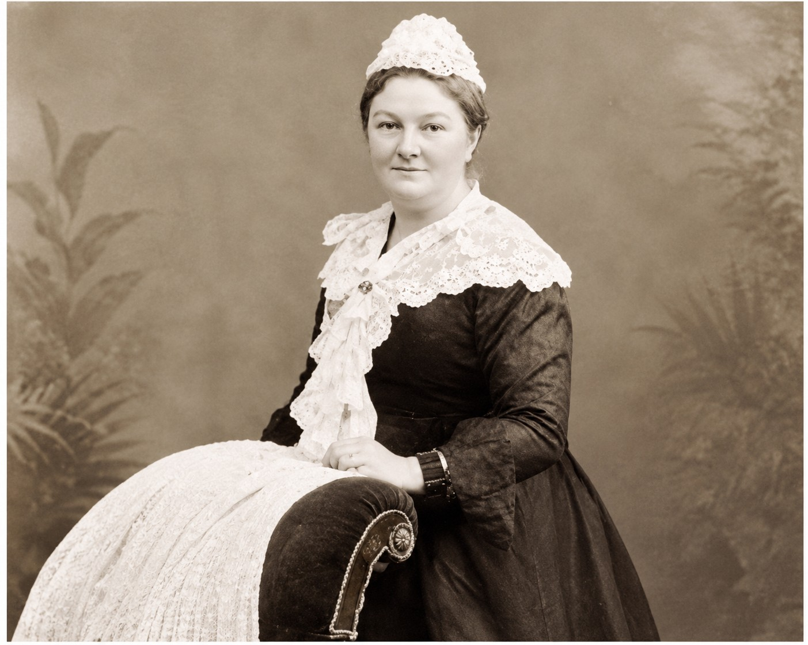
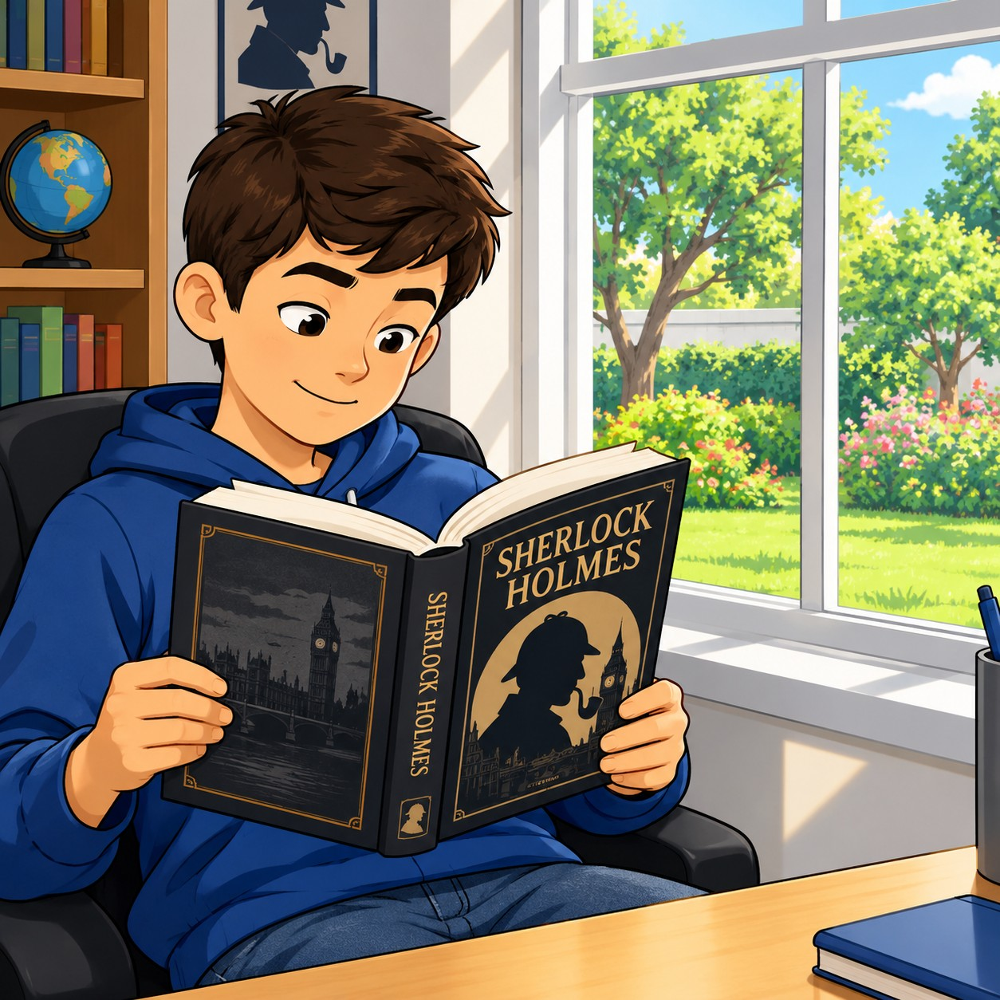

Student Information
Introduction

Welcome to the interactive worksheet! Please follow the readings, listen to the audio files, and answer the questions based on the life of Sir Arthur Conan Doyle.
Part 1: The Man who Created Sherlock Holmes
Sir Arthur Conan Doyle. National Portrait Gallery, London.
Sherlock Holmes and Dr John Watson are two of the most famous and best loved characters in all of literature. But Arthur Conan Doyle, their creator, was just as fascinating as his creations. Arthur Conan Doyle was born on 22 May 1859 in Edinburgh, Scotland. His father was a timid and impractical civil servant and when Arthur was still a young man his father had to go to live in a mental hospital because he was an alcoholic and epileptic.
Activity 1 Questions
1. Where was Arthur Conan Doyle born?
2. Why did his father go to live in a mental hospital?
Part 2: Early Studies and Adventures
His mother, on the other hand, was a strong, proud woman who came from a distinguished military family. She filled Arthur with ideas of honour and chivalry – two ideas that are present in all his writings and actions.
In 1876 Arthur began his medical studies at Edinburgh University. Because he had very little money, Arthur worked for a doctor called Joseph Bell. Joseph Bell amazed his students because he could guess the jobs and lifestyle of his patients by simply observing them carefully. Joseph Bell was Arthur’s principal model for Sherlock Holmes.
In 1880 Arthur accepted a job as ship’s doctor on an arctic whaler. During the seven-month voyage of this ship Arthur had many exciting adventures: he saw the killing of Greenland seals and whales and he himself almost drowned in icy arctic waters.

Mary Doyle. Conan Doyle’s mother in 1891. The Richard Lancelyn Green Collection.
Activity 2 Questions
1. Who was Arthur’s principal model for Sherlock Holmes?
2. What exciting job did Arthur accept in 1880?
Part 3: The Birth (and Planned Death) of Holmes
After this Arthur finished his medical studies and started a practice in Southsea, England in 1882, but it was not a success. Very few patients came, so Arthur had time to write. One of the books he wrote was a novel called A Study in Scarlet. This was the first Sherlock Holmes story.
To make money, Arthur sent a short story about Holmes to a popular monthly magazine called the Strand. Holmes soon became a big success. The Strand immediately asked Arthur for more stories about Sherlock Holmes, but from the beginning he had a strange relationship with his famous creation: he did not think his stories about Sherlock Holmes were serious and artistic enough. He wanted to write serious historic novels. So, from the beginning, Arthur planned the death of Sherlock Holmes. When Arthur told his mother about his plans to eliminate Sherlock Holmes forever she wrote to him, 'You won't! You can't! You mustn't!' But in 1893 Arthur wrote a story called The Final Problem in which Holmes dies.
Activity 3 Questions
1. What was the title of the very first Sherlock Holmes story?
2. Why did Arthur plan to eliminate Sherlock Holmes?
Part 4: Public Outrage and Return
The reaction of readers was immediate. The Strand lost 20,000 readers, and people wrote thousands of letters to Doyle begging him to bring Holmes back to life. Many people even insulted him. One woman wrote these eloquent words to Arthur: 'You Brute.' Finally, in 1901 Arthur wrote a serialised Sherlock Holmes novel called The Hound of the Baskervilles; the Strand's circulation increased by thirty thousand copies. From then on Holmes appeared in the Strand until 1927, just three years before Arthur's death.
But Arthur's life was not just Sherlock Holmes. He was very active in public affairs. Arthur spoke in favour of a Channel Tunnel, steel helmets for soldiers and inflatable jackets for sailors.
Activity 4 Questions
1. How did readers react to the death of Sherlock Holmes?
2. In his public affairs life, which of the following did Arthur speak in favour of?
Part 5: Spiritualism and Fairies
He used his real Holmes-like analytic skills to solve crimes and to defend people who were unjustly accused of crimes. Arthur also became an important advocate of spiritualism. Spiritualism is the belief that it is possible to communicate with the spirits of the dead. Arthur also believed in the existence of fairies, and said that some photographs of a little girl with fairies were real. He even wrote a book in 1922 called The Coming of the Fairies. Of course, Arthur, the creator of the most logical man in the world, Sherlock Holmes, was greatly ridiculed for these beliefs, but Arthur did not seem to care. As always, he stuck to his beliefs with honour and with pleasant good humour.
Arthur died in Crowborough, Sussex, England on 7 July 1930, one of the most famous and best loved men of his day.
The photograph of Frances Griffiths and the fairies (1917), which Conan Doyle believed was real. The Richard Lancelyn Green Collection.
Activity 5 Questions
1. What is spiritualism according to the text?
2. How did the public react to Arthur's belief in fairies?
Part 6: The Sherlock Holmes Books
The Sherlock Holmes stories were first published in the Strand magazine. The dates below say when these stories were first published as books.
- A Study in Scarlet — (1890) This is the first Holmes novel and it appeared in a magazine called Beeton's Christmas Annual
- The Sign of the Four — (1890) a novel
- The Adventures of Sherlock Holmes — (1892) Both The Blue Carbuncle and A Case of Identity appeared in this collection
- The Memoirs of Sherlock Holmes — (1894) The Yellow Face appeared in this volume
- The Return of Sherlock Holmes — (1905) a collection of stories
- The Hound of the Baskervilles — (1902) a novel
- The Valley of Fear — (1915) a novel
- His Last Bow — (1917) a collection of stories
- The Case-Book of Sherlock Holmes — (1927) a collection of stories
Activity 6 Questions
1. When was 'The Hound of the Baskervilles' first published as a book?
2. Which collection of stories was published in 1927?
Part 7: Opinion & Summary
Listen to a young woman talking about her opinion of the Sherlock Holmes stories. Summarize what she says. Do you agree?
Activity 7: Writing
Activity 8: Jigsaw Puzzle
Drag and drop the pieces to complete the image. (Using a 350x280 grid for the 20 pieces)
Target Image
